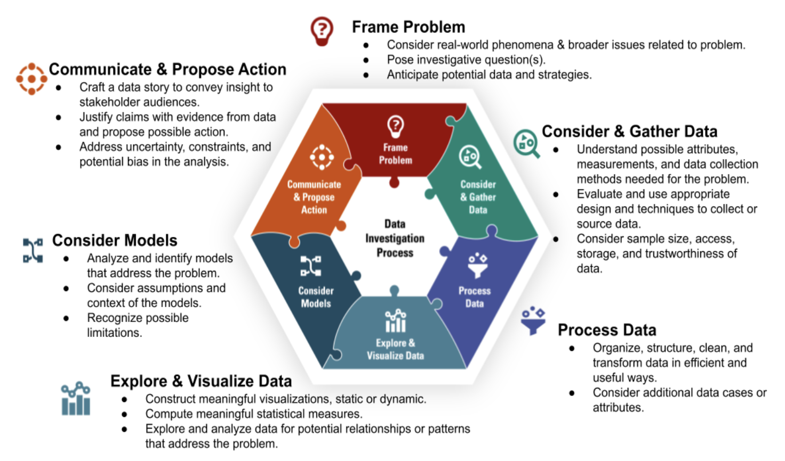
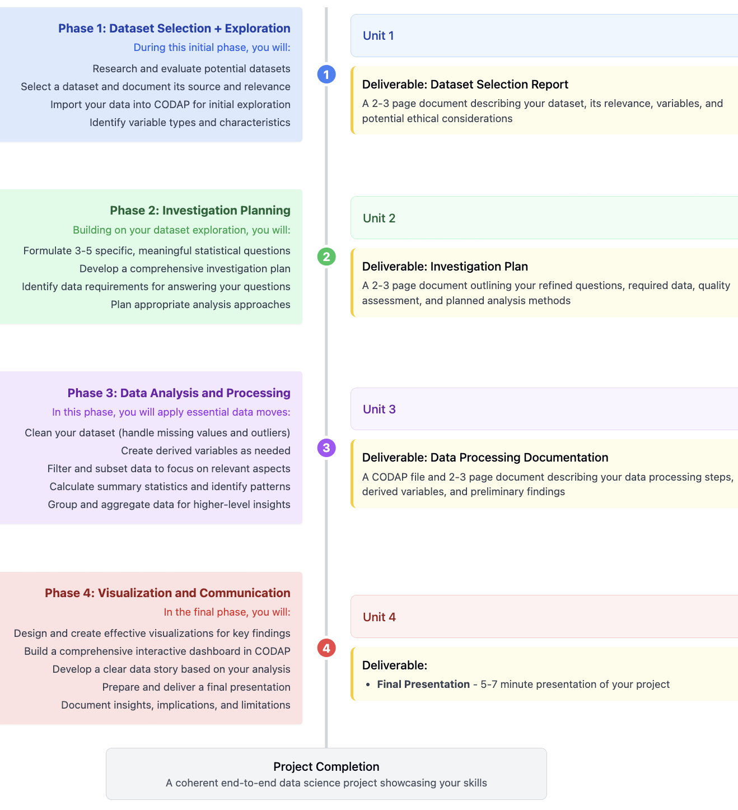

Section Project Workflow and Timeline
Your project will develop incrementally throughout the semester, with specific components aligned to the four main units of our course. Each phase builds on previous work, creating a coherent end-to-end data science project.

Subsection Phase 1: Dataset Selection + Exploration (Unit 1)
During this initial phase, you will:
- Research and evaluate potential datasets based on the selection criteria
- Select a dataset and document its source, contents, and relevance
- Import your dataset into CODAP and perform initial exploration
- Identify variable types and basic characteristics of your data
- Consider potential ethical issues related to your dataset
Deliverable: Dataset Selection Report
A 1-2 page document that includes:
- Dataset name, source, and link
- Brief description of the dataset contents and context
- Number of records and variables
- List of key variables and their types
- Why you selected this dataset and what interests you about it
- Preliminary observations from initial exploration
- Potential ethical considerations
Subsection Phase 2: Investigation Planning (Unit 2)
Building on your dataset exploration, you will:
- Formulate 3-5 specific, meaningful statistical questions
- Develop a comprehensive investigation plan
- Identify data requirements for answering your questions
- Assess data quality and potential limitations
- Plan appropriate analysis approaches
Deliverable: Investigation Plan
A 2-3 page document that includes:
- Refined statistical questions (clear, specific, answerable with data)
- Required variables and data for each question
- Assessment of data quality and completeness
- Planned analysis methods and visualization approaches
- Anticipated challenges and limitations
- Expected outcomes or insights
Subsection Phase 3: Data Analysis and Processing (Unit 3)
In this phase, you will apply essential data moves to prepare your data for analysis:
- Clean your dataset by handling missing values and outliers
- Create derived variables as needed for your analysis
- Filter and subset data to focus on relevant aspects
- Calculate summary statistics and identify patterns
- Group and aggregate data to gain higher-level insights
- Document all transformations and decisions
Deliverable: Data Processing Documentation
A CODAP file and 2-3 page document that includes:
- Summary of data quality issues encountered and how they were addressed
- Description of derived variables created and their purpose
- Documentation of filtering, grouping, and other data moves
- Preliminary findings from summary statistics and grouping
- Updated assessment of data limitations
- CODAP file with processed data and basic visualizations
Subsection Phase 4: Visualization and Communication (Unit 4)
In the final phase, you will create effective visualizations and communicate your findings:
- Design and create appropriate visualizations for your key findings
- Build a comprehensive interactive dashboard in CODAP
- Develop a clear data story based on your analysis
- Prepare and deliver a final presentation
- Document insights, implications, and limitations
Deliverable: Final Presentation
-
Final Presentation
- 5-7 minute presentation of your project
- Clear communication of context, methods, and findings
- Effective use of visualizations to support your narrative
- Discussion of implications and limitations
- Thoughtful responses to questions
